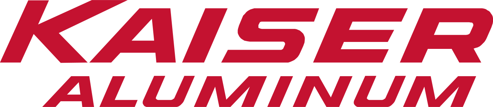
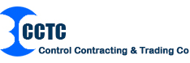

Work Experience
My diverse professional experience ranges from internships in Construction, Oil & Gas and Manufacturing, to full-time roles in FinTech and Professional Services. I am an engineering leader who hopes to continue delivering products that drive customer value and company results.
Some examples of my work experience are listed below:

Princeton Engineering Services
Project Engineer
Jan 2018 – Present
Served as the go-to engineering resource for all CIP and CTF projects with the NYC School Construction Authority (NYCSCA).
I have led over 25 projects (>$50 MM) for various agencies in the public sector and managed the projects through all aspects of the lifecycle, from conceptual design through project completion. I planned, delegated, monitored and maintained control of all aspects of the projects, and ensured that all projects are delivered on time, within budget and according to the project's scope of work. I supervised a multi-disciplinary team of 5 engineers and coordinated work between all trades. I understood complex project needs, provided reliable options and delivered cost-effective & energy efficient design solutions in a timely manner. I was also responsible for relationship management with the project owners, architects and contractors.
In addition to designing Mechanical (HVAC equipment - including chillers/boilers, ductwork, hydronic piping, steam piping and HVAC controls) systems, I also designed Plumbing (domestic cold and hot water, plumbing piping, sanitary drainage and gas), Electrical (power, interior lighting, exterior lighting, data, telecommunication and distribution), Fire Alarm (smoke/CO/heat detectors, digital fire alarm systems and panels) and Fire Protection (sprinkler and fire piping) systems. Some other clients I worked with are School District of Philadelphia (SDP) and NJ DPMC. I worked on several new constructions, additions and major renovations at educational facilities, correctional facilities, multi-family residential, mixed-use and office buildings. I strongly believe in quality engineering and sustainable design and strive to improve people’s lives by engaging in inclusive design that connects our communities and sustains our environment.
I managed all projects by following the engineering design process, where I started by finding and responding to proposals, preparing fee estimates and creating technical writeups. When the project was awarded to our firm, I performed field surveys to assess conditions existing of existing systems and prepared Scope Reports with Findings and Recommendations, Calculations and Construction Cost Estimates. Next, I worked on interdisciplinary Design Drawings in AutoCAD, typed up the Product Specifications and performed Quality Control on construction documents to ensure consistency with the project goals and to reduce cost. Throughout the process, I worked closely with my clients and responded to any concerns by the review team. I regularly performed heating and cooling load calculations and building energy modeling to determine design criteria and size system components. I am well-versed with my clients' design requirements, room planning standards and filing procedures (DOB, BCC and FDNY). I ensured the Contract Documents adhered to the applicable state and national codes and regulations, such as IBC, IMC, IFGC, NYC Building Code, NYC Mechanical Code, NYC Energy Code, ASHRAE 90.1 and NFPA-13. Moreover, I answered any RFIs, reviewed shop drawings and submittals from the contractors, and issued addendums and bulletins as necessary. Lastly, I prepared final punchlists and invoiced for the work that has been completed.
Associate Systems Analyst, SaaS Operations
Jul 2016 – Nov 2017
Managed operations for and provided tier 2 back-end support to CRD's global SaaS clients.
Automation:
• Built and maintained automation workflows and batch cycles on job schedulers such as Rundeck and Tidal.
• Coordinated with clients, colleagues and vendors to investigate, troubleshoot and resolve client-reported problems or issues detected by CRD’s automation tools.
• Planned and tracked product life-cycle phases from inception to production using Agile implementation techniques.
Database:
• Backed up, restored, maintained and extracted data from databases using SQL.
• Identified SQL issues using database traces based on error logs and suggested resolution steps.
• Collaborated with the Network Infrastructure team, on database restores, scrubbing, encryption and decryption.
• Managed system and user administration for CRD systems.
Process Improvement:
• Monitor and evaluate customer requirements to identify potential enhancements to Charles River solutions and services.
• Initiated and executed 80+ process improvement strategies to increase efficiency and effectiveness of my team and ensure business continuity and system availability.
• Researched new systems solutions and refined existing operational procedures to ensure maximum client satisfaction while balancing internal workflow and security needs.
• Provided logical and technical action plans to improve processes for tasks I had a strong technical grasp on, such as batch cycle changes and migrations.
Teamwork:
• Maintained and improved the technical documentation and knowledge articles across the organization.
• Participated in daily DevOps Scrum meetings and tracked cases using Salesforce’s CRM platform.
• Mentored new hires and recruited university interns as a senior team member.

Kaiser Aluminum
Intern Project Engineer, Plant Operations
May 2015 – Aug 2015
• Spearheaded 5 projects to improve safety and quality monitoring of plant operations.
• Devised interim corrective actions and developed long term strategies to prevent recurrence of incidents.
• Implemented time sensitive changes to reduce downtime and maximize ergonomics, and presented results to management.
Intern Mechanical Engineer
Jun 2014 – Jul 2014
• Prepared reports by collecting, analyzing & summarizing data using Microsoft Excel.
• Assembled, repaired and redressed hydraulic release liner hanger systems using service units.
• Generated technical data sheet for various tools and performed pressure quality & function tests.

Undergraduate Teaching Assistant
Jan 2014 – May 2014
• Mentored 7 teams in the ‘Transforming Ideas to Innovation II’ class.
• Tutored students in MATLAB and Microsoft Excel and demonstrated assignments.
• Coached teams on engineering design projects and promoted analytical thinking.

Control Contracting & Trading Co.
Intern Mechanical Engineer
May 2013 – Jun 2013
• Drafted workflow templates for projects and operated HVAC duct fabrication machines.
• Inspected and documented quality of containerized accommodation modules for offshore use.
• Fulfilled environmental health and safety trainings, risk inspections and progress checks.